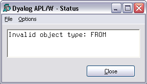

The Status window is used to display system messages and supplementary information. These include the operations that take place when you register an OLEServer or ActiveXControl.
The Status window is also used to display supplementary information about errors. For example, if in a ⎕WC statement you misspell the type of an object, you will get a suitable error message in the Status window, in addition to the DOMAIN ERROR message in the Session.
'F'⎕WC'FROM' ⍝ Should be 'FORM' DOMAIN ERROR 'F'⎕WC'FROM'
^

The Status window can be explicitly displayed or hidden using the [Status] system operation which is associated with the Tools/Status menu item.
There is also an option to have the Status window appear automatically whenever a new message is written to it. This option is selected using the [AutoStatus] system operation which is associated with the Tools/AutoStatus menu item.
Note that when you close the Status window, all the system messages in it are cleared.